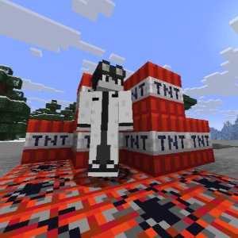
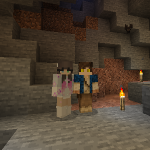

Bringing you only the least important info you will ever read!

New Explosive Development and Potential Ties to Griefing Clans
TyrosineKinaseI has developed a new explosive compound. He claims it is for productive uses, like mining and terraforming, but some claim he has ulterior motives. Police have tied a recent, major griefing event to his new compound. Police investigation is underway.
Heroldd Wanted For Involvement In Iron Farm Scandal
Heroldd has been involved in a long time scam recently uncovered by the FBI. The FBI claim he has been skimming hundreds of thousands of iron blocks off the top of a new iron farm developed to help build new skyscrapers in New York. Heroldd maintains his innocence, while also running from custody.

Marloh_ & X On The Run!
Marloh_ and Tazryn have recently escaped prison after being convicted and sentenced for the griefing of an entire village. The Golem Police Department intially had them under max security, but Marloh_ and Tazryn managed to escape their prison by sneaking a crafting table into their cell. Their current location is unknown, but the Golem Police are preparing for a raid on their base located in the woods near Golem Town.